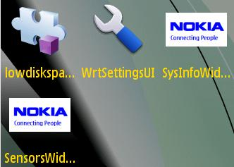
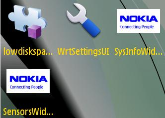
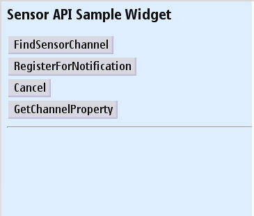
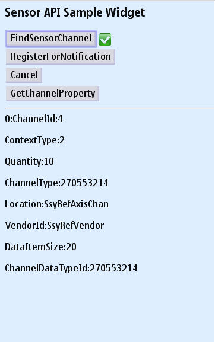
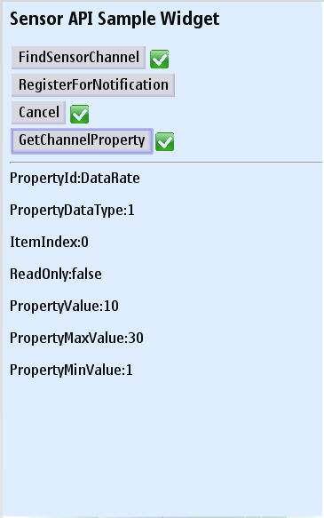

Sensor Service API - Example Widget Documentation
This document describes the Sensor Widget application for Nokia Symbian^3 SDK. Target audience are developers developing sensor applications and using other run-time environment interested in sensor service API.
Widgets are lightweight Web applications developed using the same well-known standards-based Web technologies – AJAX, CSS, HTML and JavaScript – used to create Web pages. Developers can use it as a reference and testers can use it to test the relevant functionality. This widget is intended for Nokia Symbian^3 SDK. Developers should be able to develop professional applications.
Example Widget Application is designed to run on Nokia Symbian^3 SDK. It will be designed such that a developer takes it as a reference to create useful applications for any functionality supported on SDK. It will be designed to let the testers to test the functionality
Example widget is not intended to give full featured implementation. This example will implement the Sensor Service APIs. It gives only sensor functionalities.
The example widget uses the WRT 1.0 API. The Web Runtime (WRT) environment supports the following Internet technology standards:
HTML 4.01
The basic HTML standards are supported.
XHTML 1.0
The basic XHTML standards are supported.
CSS Level 2 revision 1 (CSS 2.1)
JavaScript 1.5 (ECMA-262 3rd Edition)
The standard JavaScript features are supported. The WRT environment also provides some additional features that are mobile device specific.
The following additional JavaScript features are supported in the WRT environment:
The SensorWidget demonstrates service APIs for Sensors. Sensor Service API provides access to the various methods provided by S60 sensor channel subsystem. These include finding available sensor channels, registering to receive notification on data from various sensors or channel property changes and setting and getting channel properties.
Sensor channel provides abstraction of various physical sensors that exist in the device. The user can map data from one physical sensor to several channels.
Widget gives following fuctionalities:
1. Use the file - Open option to open the widget under <Installed_SDK_Dir>\examples\widget\SensorWidget.wgz.
2. Go to Application folder and click on the SensorWidget to start. Once you start the widget, it will ask your application permission to access data and then start the application.
 

3. This is the main screen of the application.

4. FindSensorChannel: It will finds available sensor channels. and displays some details about the channels like ChannelId, ContextType, Quantity etc. Please refer the bellow image for more details.

5. You can Register for Notification by pressing RegisterForNotification button, which will register to receive a notification when a channel property is changed. To cancel the notification call, you can use Cancel button.
6. GetChannelProperty: This API gets the specifed property of a sensor channel.

Example Widget Application does not support internationalization